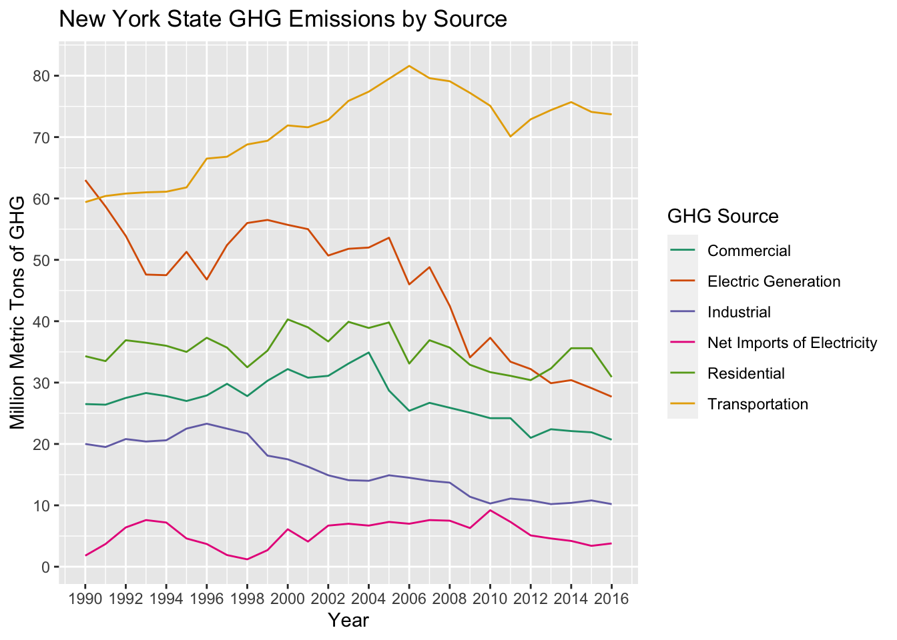
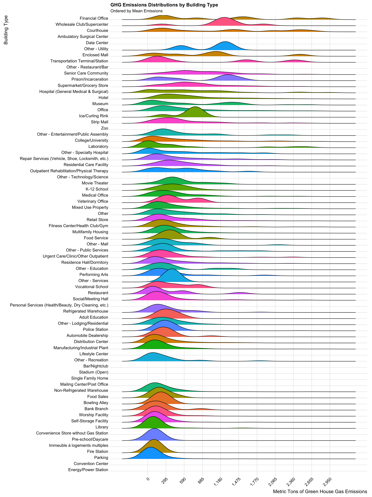
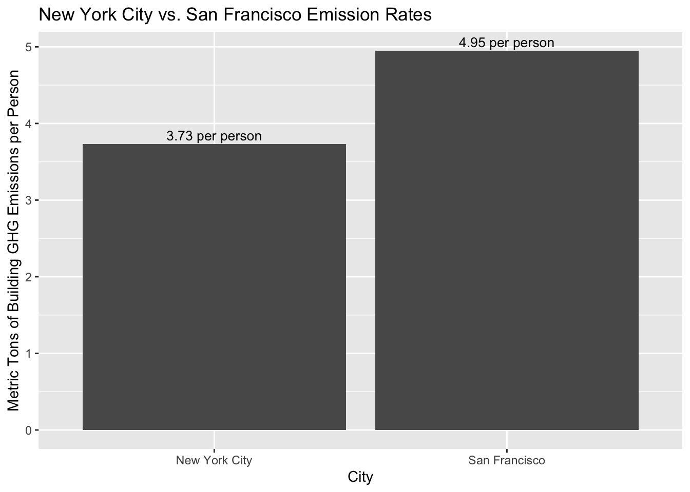
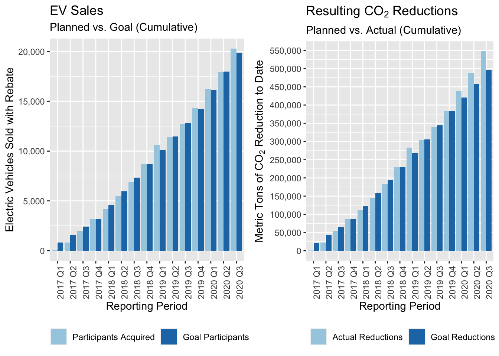

Chapter 5 Results
We begin our analysis with a basic measure of how much a community cares about the environment - how well it recycles.Specifically, we consider the diversion rate (recycled waste/total waste) of every Zone (a subgroup of a borough) documented. Unfortunately, New York City is very lacking in this measure.

Notice the flat horizontal line above the others. This is not marking the diversion rate for an NYC Zone - it is a comparison point. Specifically, it the 2019 diversion rate for Virginia. Obviously every zone in the city is falling well short of this standard.
It should be noted that a city and state may have different obstacles for their recycling; however, it should also be noted that NYC and VA are virtually the same size. New York’s population is only 200,000 people fewer than Virginia’s according to the census bureau’s website. Further, New York is one of the most well-resourced cities in the world. Simply put, we should not be falling this short. Several municipalities in Virginia have implemented single stream recycling, and the state as a whole is now outperforming. Perhaps such a policy could help.
While recycling stood out as an easy entrance point to understanding New York’s current sustainability, this is, of course, a very incomplete picture. We next decided to consider perhaps the most important measure of an area’s environmental impact = Greenhouse Gas Emissions (GHG).
We begin by considering the largest sources of GHG in New York State over time:

The elevated levels of emissions caused by transportation immediately jump out. This suggests that cars, trucks, and other motor vehicles are some of the biggest local culprits.
Interestingly, this pattern does not fully hold when considering just New York City, as stationary fuel burners represent a larger problem here:

Here, it is important to note two crucial limitations of our data. Firstly, the data set for NYC emissions only represents 1 year - 2016. It is possible that we were unlucky, and this is an outlier. Secondly, NYC Open Data does provide methodology for measurement. This is quite important for this particular question. New York is a city with many commuters, and it is unclear if emissions from cars driven by people who do not live in the city but work in it are included.
Still, caveats aside, the dip in the importance of transportation (statewide, transportation is responsible for 90% as many emissions as stationary, compared to 66% in the city) does coincide with zooming in on a city that prioritizes walking and public transportation, suggesting that commuter driving may be a very important subset of transportation emissions.
On the other hand, the plot also demonstrates the clear importance of buildings when considering the city’s GHG emissions, warranting a closer look at building emissions in the city. As a first step, we consider the locations of our worst emitters:

While the 11370 zip code in Queens stands out as a particularly high emitter, Manhattan appears to be the borough with the most highly damaging buildings.
Of equal value is a better understanding of the types of buildings that are most often responsible for high emissions - shown below. Prior to considering the graph, we note that results here are filtered. Specifically, we considering only buildings with GHG emissions of 2,952 metric tons or fewer. This threshold was landed on after several rounds of graphing made it clear that anything above this threshold skewed the graph in such a way as to make it difficult to read. The buildings kept represent over 96% of all observations.

Interestingly, financial offices have the highest mean GHG emissions per building. This was not an expected result, as finance does not necessarily require large amounts of fuel usage. This is, though, a very interesting result to consider along with the prior analysis of emissions by location. Manhattan, often regarded as the financial center of the city (if not the world) was the worst emitter. Perhaps the presence of many Manhattan zip codes at the top and financial offices’ emissions are entwined. Courthouses are a curiosity without immediately obvious explanation. However, perhaps some of the worst emitters are more expected. For example, supercenters and datacenters (while there are not enough observations for a visible distributions, their average emissions are quite high) both require steady cooling of buildings. It is not necessarily surprising that this type of function could require large amounts of energy.
Before drawing any concrete conclusions, we should, however, point out some issues with our data. This is a data set for 1 year (2019), so there is a risk that it was an aberrant year. Perhaps more importantly, as a reminder, these are only buildings covered by Local Law 84, which is based on square footage thresholds. This means that we are likely only considering the worst emissions buildings throughout the city. It’s possible that our understanding of the locales and building types most responsible for emissions would shift if we had a more complete picture.
If we were to estimate New York’s building overall, though, we may be somewhat surprised by the results. We consider the following:
First - as Local Law 84 separates our dataset based on square footage, we check whether this has a significant role in GHG emissions:

While some zero values may skew the overall picutre, there does appear to be a generally positive correlation between the two. As such, in order to estimate total emissions, we take the sum of all documented GHG emissions by the the sum of all of documented square footage - this gives us a metric of GHG emissions per square foot. The calculation gives about 0.0056 metric tons of GHG emissions per square foot.
Next, we apply this to the total square footage documented in land use data set. This dataset (with roughly 30 times as many buildings as the energy use dataset) has 5,584,887,007 total square feet documented in New York City. This comes out to a grand total of an estimate 31,099,387 metric tons of GHG emissions from New York City in 2019. To put this number into context, Google Sustainability Initiative estimates that in the same year San Francisco emitted 4,360,000 metric tons of GHG. Obviously, New York’s number is much larger. However, New York’s population is also about 9.46 times larger than San Francisco’s. So, while our estimated(!) GHG emissions are 7.13 times larger San Francisco’s, on a per person basis each of us actually responsibility for about 75.4% of the building emissions of one San Franciscan.

Having taken stock of the current state of New York’s environmental impact, we shift our focus towards potential solutions.
We begin with a further consideration of buildings, as they represent a potentially crucial resource in New York City’s attempts to become more sustainable. Specifically, their rooftops could be used for the implementation of solar panels. Rooftop solar energy represents a titanic opportunity for clean energy generation. For our purposes, we estimate rooftop space in the city via the previously defined 2D square footage. While there are presumably some buildings with roofs smaller than their first floors (or with some parts of the roof that are unusable), this works well enough for a ballpark understanding. This comes out to 618,818,491 feet of roof area.
To understand the opportunity this footage affords, we again turn to Google’s Sustainability Initiative. They cite estimate San Francisco’s rooftop solar potential as enough to reduce GHG emissions by 917,000 metric tons per year. This potential is based on 10,500,000 square meters of roof space, equivalent to 113,022,000 square feet. For an estimate of NYC’s potential, we develop a rate statistic of metric tons reduces per square foot of rooftop space, equal to 917,000/113,022,000, or 0.0081.
Before applying this rate statistic to the total estimated rooftop space in NYC, we have to note 2 complicating factors.
First is that location substantially affects solar panel effectiveness. This is because different locations capture different amounts of sunlight. Here, we note that San Francisco is estimated to capture 67% of potential sunlight annually. In contrast, New York captures about 55%. This is not a perfect of sunlight capture (total annual sunshine hours would be useful, but this stat was much more difficult to track down). Nonetheless, we use this measure as a rough estimate of the two locations’ sunlight capturing ability. For this reason, we must penalize potential solar panel gains in New York by a multiplier equal to 55/67.
The next complicating factor is that not all rooftops can be used for solar panels. San Francisco is estimated to have 87% of its rooftops eligible. In contrast, New York has been estimated to have 2/3 of its roofs usable. This citation is now a decade old and may be conservative, but it agin will do for ball park purposes.
This leaves us with the following equation for estimating our potential GHG emission reductions via rooftops:
\[ Reductions = \frac{917,000}{113,022,000} * \frac{55}{67} * \frac{2}{3} * 618,818,491 \] This is equivalent to 2,747,681, or 8.8% of our total building emissions. This is the equivalent of taking 69,000 cars off the road.
In order to zoom in on the concrete potential difference we could see, we revisit the previously considered cleveland dot plot, now viewing current GHG emissions per building versus potential new averages.

While there does not seem to be one area that would particularly affected, every zip code consistently mild to proportionally large gains. Also of interest when considering the mild gains is the implied difference between 2D and 3D square footage. That is, we have previously established the correlation between 3D square footage and GHG emissions, while some of the proportionally smaller reductions in GHG emissions would suggest that 2D square footage is not as correlated with GHG emissions. This is likely a reflection of the fact that New York tends to build buildings upward, rather than out, and each square foot requires energy regardless of direction.
Given the importance of transportation emissions statewide, and the decrease in its importance in a less car-dependent area, a consideration of on-road vehicles is also warranted. Specifically, we review electric vehicles.
A plan currently in place in New York to encourage citizens to buy electric cars is the Drive Clean Rebate program. The rebate program offers up to a 2,000 dollar point of sale rebate for the purchase of a qualifying electric vehicle. The state tracks the program’s progress by collecting data such as participants acquisition, participant acquisition goals, CO\(_2\) emission reductions and CO\(_2\) emission reduction goals. We compare these goals to the performance of the program below. A participant is defined as one who buys an electric car and receives a rebate for it.

Since the beginning of the electric vehicle rebate program in New York, we see slow and steady adoption. Beginning in late 2018, the number of vehicles purchased via the rebate has consistently outperformed expectations. The overflow amount of participants acquired still receive the rebate; however, this suggests that we will run out of budget faster than expected. We also conclude from this graph that rebate is a strong incentive for New York residents to buy an electric car.
Similarly to the rebate participants, since late 2018 emissions reductions have exceeded planned reductions. Additionally, reductions appear to exceed planned reductions by a larger margin than rebate participation. This suggests that, while access to the rebate may be a motivating factor, a desire the lowest emission vehicles available may be as well. This can also be due to increased R&D from the manufacturers’ sides to make their vehicles more efficient.
It is clear that the rebate program is working - it has proven that it incentives New Yorkers to buy electric vehicles and thus reduces CO\(_2\) emissions. The participants in the program have consistently exceeded the goals and the CO\(_2\) emission reductions are much higher than expected. However, this program wont last forever. The budget for the rebate program is currently set at 60 million dollars. With the growing popularity of the program, NY is rapidly running through that budget. New York has already used ~53 million dollars of the rebate budget. If this trend continues, the program and it’s positive benefits, will likely come to a halt in the next year or so.
To analyze when the budget will run out if EV purchases continue at this rate, we perform a linear regression on the data. The data is complete up to 2021 Q1, so we consider quarters after that to be in the future.

We see that the program will run out of its current budget between 2021 Q4 and 2022 Q4, where the regression line intersects with the budget line. This suggests that current policy could be holding the state back from a more environmentally friendly endpoint. Perhaps increasing the rebate could make this possible.